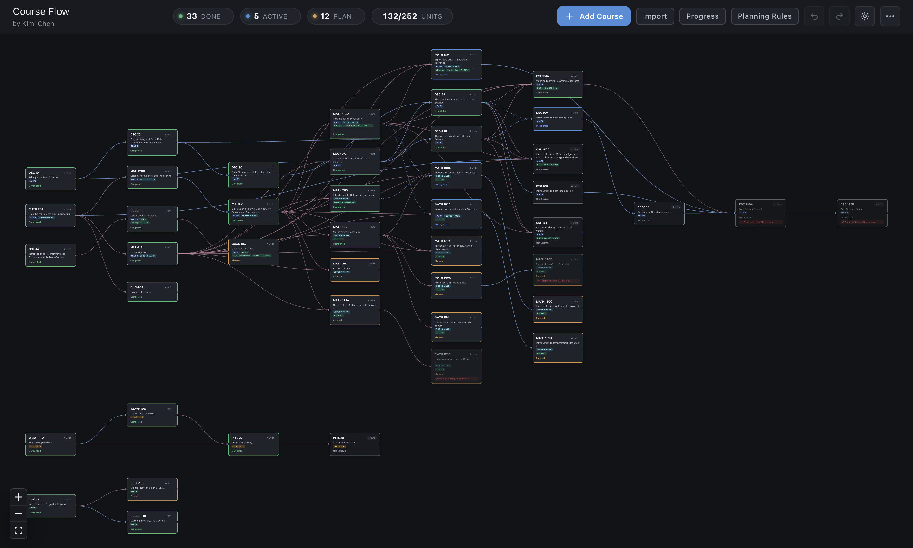

Hi! I'm Kimi, a Data Science and Applied Mathematics double major at UC San Diego with a minor in Cognitive Science. I bridge the gap between research and product, focusing on Computer Vision, World Models, and Generative AI. I'm passionate about engineering new architectures and building tools that actually solve problems.
(Yes, I'm named after Kimi Räikkönen, the 2007 Formula 1 world champion. Not sure if it says much about me, but it's a great conversation starter.)
This site is for DSC 106. My main website is at kimichen.net.
